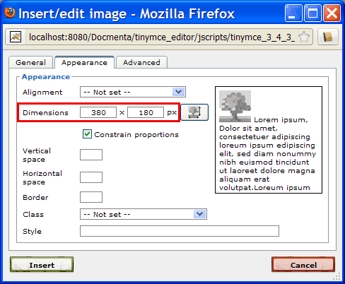
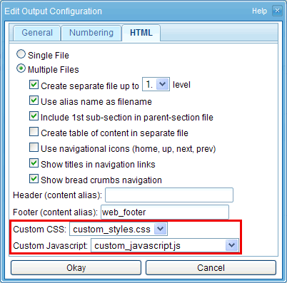

1.13.11. Creating HTML preview images
As an example, this chapter describes how to open an image in a separate window, whenever a user clicks on the image. This is usefull if images are inserted into the content with reduced dimensions. If a user wants to see an image with full resolution, he just has to click on the image.
When inserting an image into the content (see Section 1.3.4, “Images”), the dimensions can be set in the image dialog, as shown in the following screenshot (image dimensions are highlighted in red):

Figure 1.13.80. Setting the image size
This way it is possible to show a small preview of the image within the content. However, the image itself is still exported with its original dimensions, the image is just scaled for presentation. Therefore, it is possible to show the image with its original dimensions, by opening the image in a new window. (Note: if no dimensions are given in the image dialog, then the image is shown within the content with its original dimensions).
The solution shown here uses custom JavaScript and CSS code which is added to the HTML output.
First of all, open the content node in which you have inserted the image myillustration (see Section 1.3.4, “Images”). Now, select the image myillustration and open the image dialog by clicking the "Insert/edit image" button (). On the "Appearance" tab you'll find the image dimensions input fields (see screenshot above). First, click the button next to input fields, to get the original dimensions of the image. Then enter a reduced width (and/or height). If the "Constrain proportions" checkbox is checked, then the height or width of the image will be adapted automatically so that the original image proportions are preserved. Save the changed node.
We now have to add some JavaScript code that handles the events when user clicks on the image. User defined JavaScript code can be added in the file System > HTML customization > custom_javascript.js. Therefore, download this file (right-click the file and choose "Download") and open the file in a regular text editor. Add following JavaScript code to the file:
function initpage() {
var img_cnt = document.images.length;
for (var i=0; i < img_cnt; i++) {
var img = document.images[i];
if (img.parentNode.className == 'mediaobject') {
img.onclick = openpic;
}
}
}
function openpic() {
window.open(this.src, '_blank',
'location=no,menubar=yes,resizable=yes,scrollbars=yes,status=yes,toolbar=yes');
}
window.onload = initpage;
var img_cnt = document.images.length;
for (var i=0; i < img_cnt; i++) {
var img = document.images[i];
if (img.parentNode.className == 'mediaobject') {
img.onclick = openpic;
}
}
}
function openpic() {
window.open(this.src, '_blank',
'location=no,menubar=yes,resizable=yes,scrollbars=yes,status=yes,toolbar=yes');
}
window.onload = initpage;
Save the file and upload the changed file to the folder System > HTML customization. You will get a warning that a file custom_javascript.js already exists. Choose "Overwrite" to replace custom_javascript.js with the uploaded file.
Additionally, you can add a CSS style that changes the appearance of the mouse pointer when the user moves the mouse over the image, to indicate that the user can click on the image. To achieve this, download the file System > HTML customization > custom_styles.css and add the following lines to the file:
div.mediaobject img { cursor:pointer; }
Save the file and upload the changed file to the folder System > HTML customization. You will get a warning that a file custom_styles.css already exists. Choose "Overwrite" to replace custom_styles.css with the uploaded file.
Finally, we have to set the CSS and JavaScript files in the HTML output configuration. To do this, open the HTML output configuration dialog as shown in Section 1.8.2, “Output configurations”. Select the custom CSS and Javascript files from the listboxes as shown in the following screenshot:

Figure 1.13.81. Setting the JavaScript file in the output configuration
Save the output configuration by clicking "Okay". Now, when a publication is exported with this output configuration, the selected CSS and JavaScript file will be included in the head of each exported HTML page.
To see if everything works fine, export a publication, that contains the previously edited image myillustration and choose the HTML output configuration. In the exported publication, the image should be shown with reduced size. If you click on the image, the image should be opened with its original dimensions in a new window.